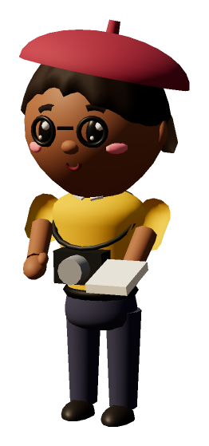
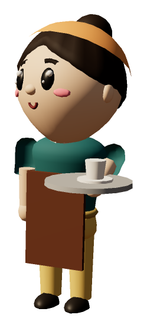
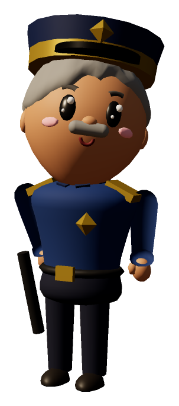
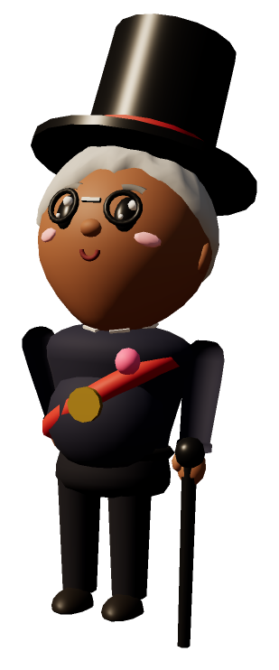
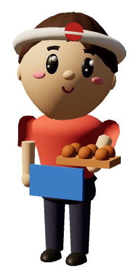

The people of Mistport
Eight residents, each played by Gemma on AMD
Barney
the baker
Daisy
the florist

Penny
the reporter

Molly
the café owner

Chief Harlow
the police chief

Mayor Higgins
the mayor
Gus
the festival organizer

Rosa
the takoyaki stall owner